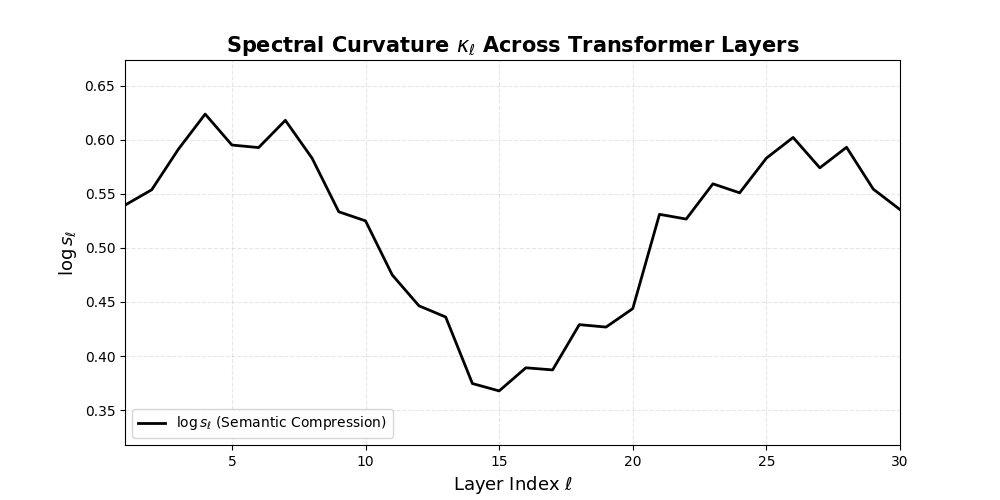
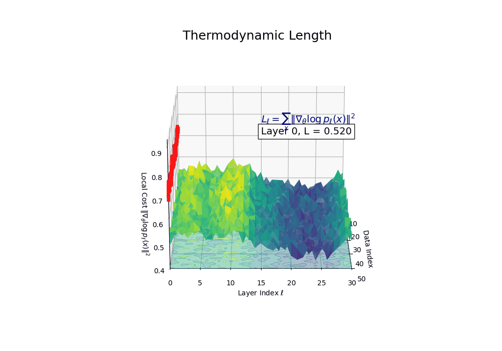
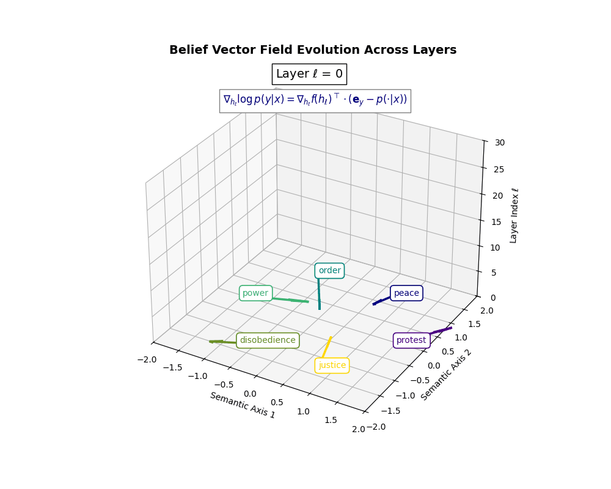

nDNA
Introduction to nDNA
nDNA—short for Neural DNA—is a semantic-genotypic representation that captures the latent identity of foundation models through the intrinsic geometry of belief. It is synthesized from three indispensable dimensions of latent geometry: spectral curvature, thermodynamic length, and belief vector fields. These dimensions converge to unveil an underlying epistemic cognitive geometry. The resulting structure is a high-dimensional scaffold of internal cognition—a latent topography called nDNA.
The Core Triad of nDNA
nDNA integrates three foundational signals to form a latent cognitive fingerprint. Each component captures a distinct dimension of semantic dynamics:
1. Spectral Curvature ( $ \kappa_\ell $ )
Spectral curvature measures how sharply internal representational trajectories bend. It is defined as the second-order difference across layer activations:
\[\kappa_\ell = \|h_{\ell+1} - 2h_\ell + h_{\ell-1}\|\]Peaks in $\kappa_\ell$ identify zones of semantic inflection, belief compression, or ideological absorption.

2. Thermodynamic Length ( $ L_\ell $)
Thermodynamic length quantifies the epistemic effort required to traverse belief transitions across layers. It is computed as:
\[L_\ell = \sum_{x \in D} \|\nabla_\theta \log p_\ell(x)\|^2\]This metric reveals the latent computational cost of adapting to alignment constraints, cultural priors, or multilingual semantics.

3. Belief Vector Field ( $ |v^{(c)}_\ell| $ )
The belief vector field models the directional semantic force exerted by cultural or value systems on a model’s latent representations. It is defined as:
\[v^{(c)}_\ell = \mathbb{E}_{x \sim P^{(c)}} \left[ \nabla_{h_\ell} \log p(y|x) \right]\]The norm $|v^{(c)}_\ell|$ identifies regions of strong directional pressure from cultural priors.

The nDNA Score
The nDNA score is a composite measure that combines curvature, length, and belief steering:
\[\text{nDNA}_\ell = \omega_\ell \cdot \kappa_\ell \cdot L_\ell \cdot \|v^{(c)}_\ell\|\]This product integrates internal bending, epistemic effort, and external drift into a unified diagnostic signal.

nDNA Geometry
The geometry of nDNA is the joint distribution of $\kappa_\ell$, $L_\ell$, and $|v^{(c)}_\ell|$ across layers. This triad constitutes a high-dimensional semantic fingerprint that encodes inheritance stability, alignment dynamics, and cultural drift. Patterns across this geometry distinguish models by latent adaptation history.